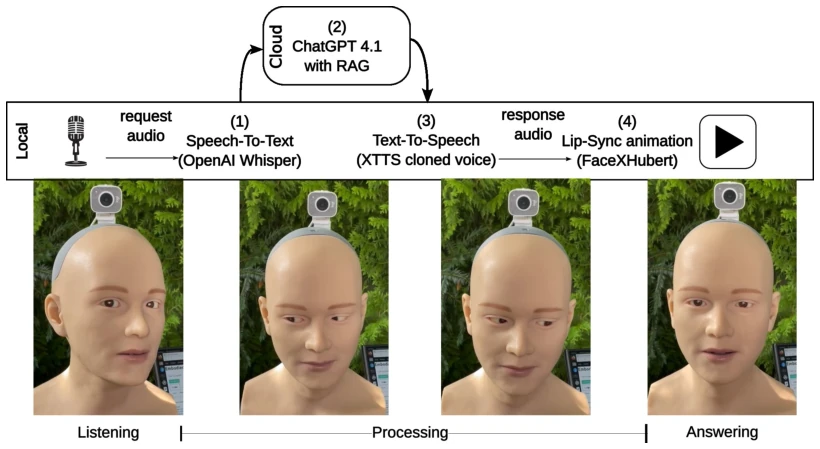

A Case Study on the Acceptance of a Humanoid Robotic Head Employed in Three Public Spaces
Marcel Heisler, Luca Randecker, Christian Becker-Asano abspdf
论文点评Review
这篇论文把“头”当成了主角，在三个公共场所测试了 Kim 机器人的接受度。亮点在于技术栈堆得挺满：Whisper 听、GPT 说、WASABI 演情绪、FaceXHubert 对口型，试图打造一个“有灵魂”的对话头。但槽点也不少：样本量 49 人就想做统计推断，这统计效力（statistical power）怕是连 p 值都救不回来。虽然 TAM2 问卷显示大家觉得“有用”，但每五个用户就有一个嫌反应慢，这延迟在实时交互里简直是“社死”现场。另外，图书馆和旅游局接受度高，政府大楼却低，说明场景匹配比技术堆料更重要。总之，这是一个典型的“技术可行但体验待打磨”的现场实验，适合给 Embodied AI 的交互延迟优化提供反面教材。
—
研究动机Motivation
人形机器人能否融入日常生活，关键在于人类接受度，而这受环境、任务能力及文化规范影响 [1], [2]。现有研究多集中在单一场景或全身机器人，缺乏对 android 机器人在不同公共空间接受度的对比分析 [17]。特别是，此前没有研究使用经过验证的 Technology Acceptance Model Version 2 (TAM2) 问卷来测量和比较 android 机器人在多个真实世界设置中的接受度 [16]。本研究旨在填补这一空白，通过 Kim 机器人在游客信息中心、建筑管理局和城市图书馆的实地部署，探究环境背景如何影响用户对具身对话代理的感知有用性、易用性及使用意愿。这有助于理解在公共服务场景中，技术接受度模型是否普适，以及场景适配性对 HRI 的关键作用。
—
方法Method
整体交互 Pipeline 分为感知、决策与执行三阶段。感知层通过前置麦克风采集语音，后置摄像头利用 PoseNet 追踪人脸进行眼神交互。决策层核心是 OpenAI GPT-4.1 助手，结合 Retrieval Augmented Generation (RAG) 注入地点特定信息（如开放时间、法律条文），并调用 WASABI 模块计算情绪效价（valence），生成包含情感状态的文本回复。执行层采用 XTTS 模型进行多语言语音合成，FaceXHubert 生成口型同步动画，14 个气动执行器驱动面部表情。创新点在于将大语言模型与情绪模拟后端深度耦合，且针对不同地点定制了 System Prompt，使机器人能根据上下文（如旅游局 vs 政府大楼）调整回复策略。此外，软件框架运行在 Nvidia Jetson Orin 上，通过 RS-485 控制面部动作，实现了从语音输入到多模态输出的闭环。
—

Fig. 1. While the microphone in front of the robot is turned on, the robot head Kim performs a “listening” animation. Then, OpenAI’s Whisper speech-to- text model is used to transcribe “request audio” into text. The resulting text is sent to an OpenAI ChatGPT 4.1 assistant, which uses Retrieval Augmented Generation (RAG) together with a location-specific system prompt to generate a textual answer. The text-to-speech software XTTS transforms the text into a “response audio”, which is used by FaceXHubert to encode a lip-sync animation of the robot’s face. Finally, the animation is played back together with the audio. The video stream provided by the camera behind the robot’s head is analyzed for the presence of human faces, of which the closest is selected as an eye gaze target, whenever Kim